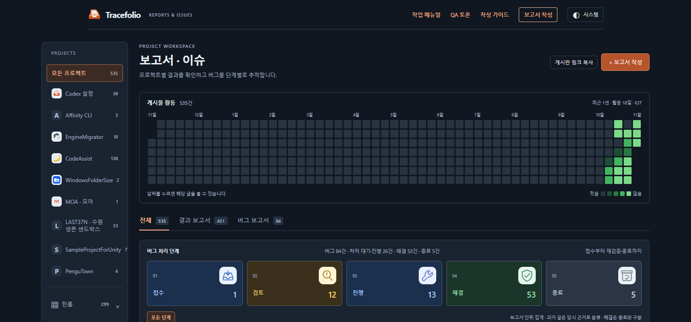
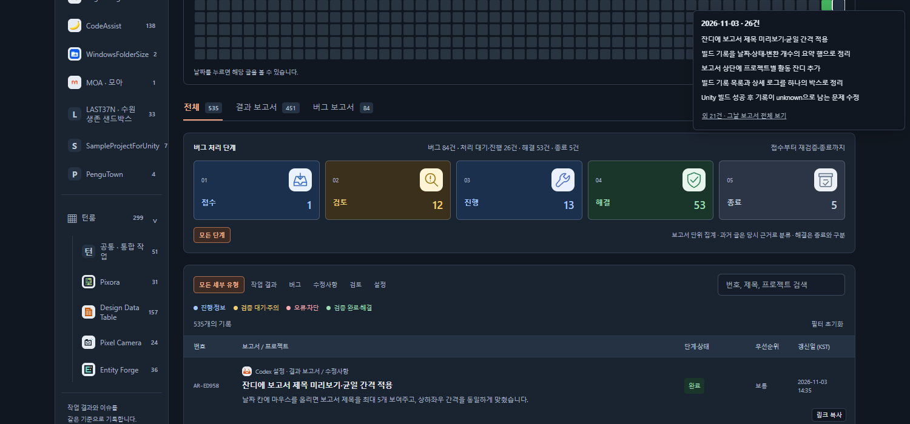

Codex 설정수정사항
Codex 설정수정사항잔디 미리보기에서 보고서 바로가기·유지·반복 작업 개선
완료미리보기 제목을 클릭해 보고서로 이동하고, 마우스·키보드 포커스가 있으면 열린 상태를 유지합니다.
작업 결과
제목 바로가기와 미리보기 유지 동작을 적용했습니다. 사이트 보기
변경 내용
적용 내용
- 제목을 실제 보고서 링크로 바꿨습니다. 마우스·키보드 포커스가 미리보기 안에 있으면 유지하고, 벗어나면 140ms 후 닫습니다.
- 호버마다 만들던 제목 DOM을 날짜별로 재사용합니다. 위치·크기 측정도 캐시하며, 날짜 선택만 바뀔 때는 집계와 달력을 다시 만들지 않습니다.
- 스크롤 이벤트가 열린 미리보기를 즉시 닫던 경로도 수정했습니다.
변경 전 — 제목은 클릭할 수 없고 마우스가 칸을 벗어나면 닫혔습니다.

변경 후 — 제목 링크와 미리보기 유지가 동작합니다.

검증
자동 테스트48개·브라우저24개 통과. 제목 클릭으로 실제 페이지 이동, 툴팁 마우스/키보드 유지, Escape, 필터·모바일을 확인했습니다. 공개 사이트에서도 링크·유지·간격을 검증했습니다. 공개 검사
호버200회 비교에서 새 DOM 생성은1,263개→0개였습니다. 변경 전 측정 · 변경 후 측정. 처리 시간은 실행 환경에 따라 변동하므로 고정 배속 향상으로 단정하지 않습니다.
남은 사항
기존에도 호버마다 전체 게시물을 재집계한 것은 아니었습니다. 다만 매번 미리보기 DOM을 만들고 크기를 읽었습니다. 사용자 체감 지연의 모든 원인이 이 경로였다고 단정하지 않습니다. 전후 사진은 직접 캡처했으며 편집·GIF 제작은 하지 않았습니다.
교훈 검토: 변경 없음 — 검증된 실행 경로와 측정 결과만 프로젝트 기록에 남겼습니다.
작업 시간
- 제안 시간: 6~10분
- 실제로 완료된 시간: 시작 2026-11-03 14:38:12 KST · 기능 공개 확인 2026-11-03T05:46:47.942Z · 결과 기록 최종 배포 시각은 채팅에 표기
- XERJ: 미사용 — 연결 미제공 — 현재 JS와 이벤트 스택·실제 브라우저 측정으로 확인